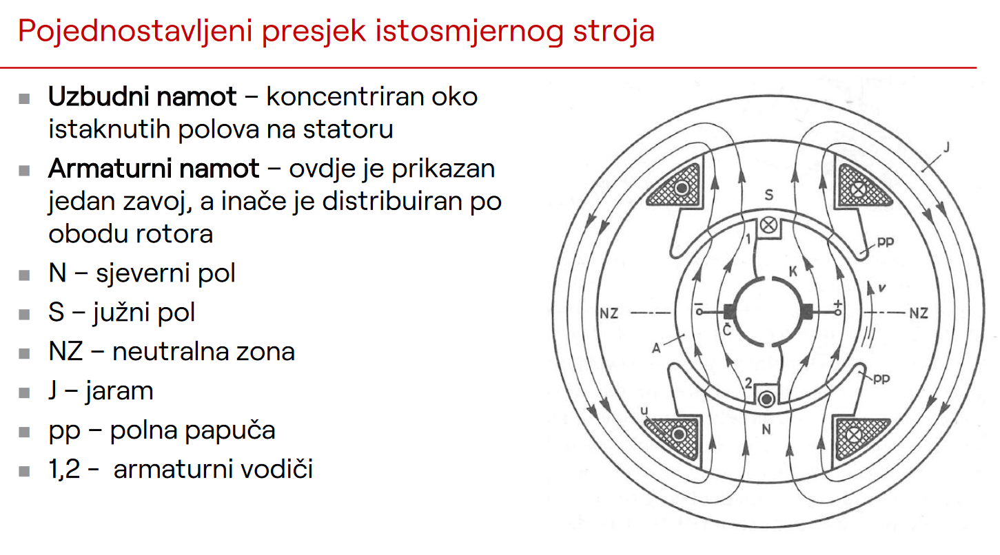
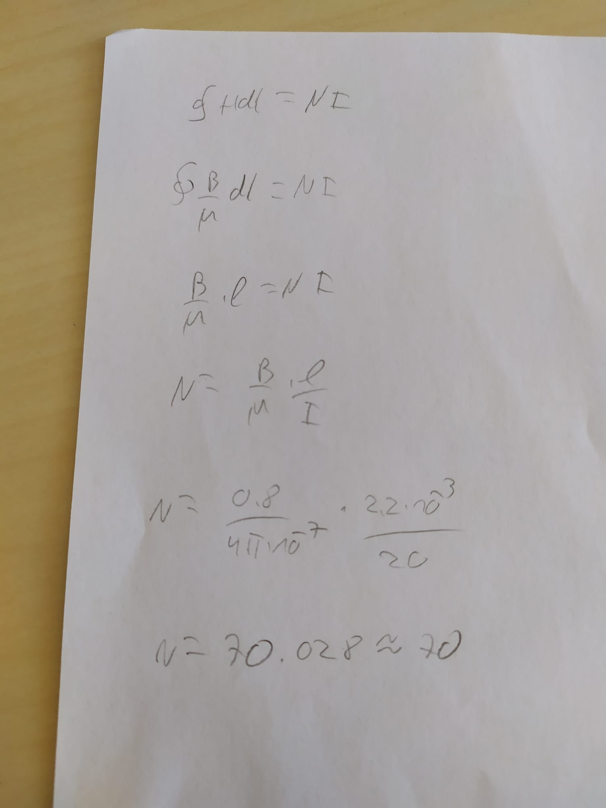

Mioch u svakom slucaju ja bi to ovako rijesio ( nisam ovo dugo radio pa nisam sto posto ):
dakle ako gledamo sljedecu sliku:

pratimo ove strelice magnetskog kruga koje se zatvaraju preko rotora. Primjenimo Amperov zakon po toj krivulji koju zatvaraju te strelice. Vidimo da dva puta prelazimi zracni raspor i onda se krecemo ili po rotoru ili po statoru. S obzirom da je rotor ili stator ( magnetska jezgra ) mali otpor za magnetski krug, njega zanemarujemo jer se na protjecanje magnetskog polja kroz željezo koristi relativno mala struja. Nama je zanimljiv ovaj zracni raspor na kojega otpada najveci postotak potrebne struje. Kako imamo dva pola potreban broj namota se dijeli, što znaci da možemo gledati kao da svaki pol savladava jedan prijelaz preko zracnog raspora ( 2.2mm ) i onda dalje racunamo broj zavoja iz Amperovog zakona.
racun :

ovo sam napisao sve koliko sam se sjecao pa nisam sto posto siguran da je dobro ( trebalo bi bit ) hahah al vjerujem da ti moze pomoc. Ako neko misli da treba drugacije nek napise.